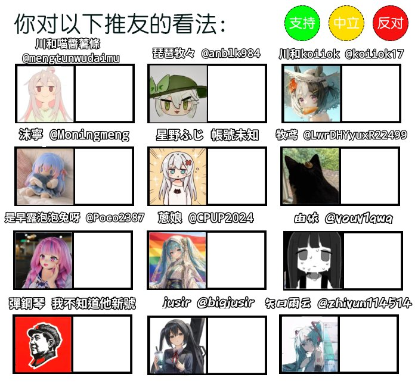

由依🍥
@youy1qwq
竟然有由依喵！感谢大家喜欢🥺
对梗图号感到厌烦什么的也很能理解（虽然很想发日常呜呜为什么subscribe还不能审核通过）
不过只是想到 大概就算是为了吃流量而生 也还是没法狠下心发那些incel厌女内容吧 或者右翼降智狗哨 也不太喜欢别人炒作“男娘”之类的
哎 不过还是尽量忍着不会发表自己的看法了 爱你们 最重要的就是大家要天天开心喵❤️

𝐀𝐬𝐡𝐥𝐞𝐲 𝐁𝐥𝐨𝐜𝐤🍥🌹🇹🇼🏳️⚧️🇪🇺
@bolckAshley
仿照這個做了一個另外的版本 歡迎來玩 https://t.co/Z3rHi2xXks https://t.co/eKbHjVSIsb